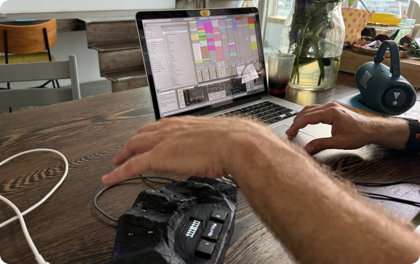

Played in the air. Trusted through the software.
SUMMARY
Designing the software for an instrument you play without touching it
Quray turns hand movement into MIDI and CV control for synths and modular gear. As the sole product designer, I defined how the web configurator and physical device work together: from product architecture to a working coded prototype.
My role
Sole product designer
Team
Founder · Developer · Me
Timeline
2026 — ongoing
Product stage
-
Research
-
System design
-
Prototype testing
-
Backend + device testing — not started
- Modular synth forums, competitor teardowns, and musicians who had been burned by hardware companies that disappeared.
- Nine specs, each with the same four tables: what the interface does, what the system does, what happens when it fails, what is still open.
- One test screen split into a Library, an Editor and a Device page, each answering a different question.
- What lives in the browser, what lives on the instrument, and what happens when the two disagree.
- Working prototype built with React, TypeScript and Tailwind in Cursor. Sync states, undo and zone editing behave the way they will in the product.
- Tokens in one file, and a live styleguide route that imports the actual components, so it cannot drift from the product.
Working prototype built with React, TypeScript and Tailwind in Cursor Open the prototype →
Pre-launch product impact*
* No post-launch metrics yet. The product is still in testing.
Turned a sensor test screen into a product system
One developer screen became a Library, Editor and Device area, with 9 flow specs for sync failures, recovery and memory limits.
Made an invisible instrument understandable
Live hand feedback, spatial zones and real-world coordinates show what the device sees and what each movement controls.
Protected tonight's show from tomorrow's edits
Library and device versions can intentionally differ, so future changes do not overwrite a setup already trusted on stage.
PROBLEM
Built to test sensors, not support musicians
PROBLEM
Built to test sensors, not support musicians
The brief was to make the configurator look better. The real task was to rebuild the product model behind it: turning a sensor test tool into a system musicians could use to create, organise and load presets onto the instrument.
There is nothing to look at where the music happens. The active field is a volume of air above the device, and zones have no physical edges. Each zone can trigger a note, control a parameter, or send a CV signal, but the user cannot see where the field starts, where one zone ends, or whether their hand is in the right place. The interface had to show the field geometry before asking anyone to configure it.
Quray is a controller, not a synthesizer. It only produces control signals, so the user has to connect external gear and configure the mappings before anything can be heard. That makes the first-use problem harder: silence can mean four different things, and the user has no way to tell which. Nothing connected, wrong mapping, dead synth, lost tracking — all of them sound identical. The software had to show cause and effect on screen instead.
Before Quray can feel playable, the user has to build a mental model: presets contain zones, zones have mappings, mappings route to Note, MIDI, or CV, everything has a save state, and the device has its own memory that does not automatically match the browser. None of this can be hidden, because this audience needs to see and control the full structure. It had to stay visible and inspectable without looking like a settings dump.
The configurator is one half of the product. The other half is a device with three buttons and a monochrome screen 128 pixels wide, and I own that surface too. What a musician can read there mid-performance, and what the buttons do when there is no computer nearby, is a separate design problem in very little space.
When I joined, Quray was not an idea on paper. The hardware had already been shown at Superbooth Berlin and was impressive enough to get attention. But the software had not caught up with the instrument yet.

The original configurator, built to test the sensors.
-
1
No hierarchy. Sensor calibration and musical settings carry the same visual weight, so nothing tells you where to start.
-
2
No library. Presets live in a dropdown, with no way to browse, name or organise what you built.
-
3
Save and sync are one action. "Save to device" gives no model of what is saved where.
-
4
No preset overview. Zones appear one at a time as "Gesture 2 / 2", paged through with arrows.
-
5
Preset and zone settings sit side by side with nothing marking which is which.
-
6
Everything is an "Event". Notes, MIDI and CV are mixed into one generic list, so a modular user has no obvious place to start.
-
7
The invisible field stays invisible. Position is shown as coordinates between 0 and 1, with no live hand feedback.
-
8
The instrument is a black box. The top bar talks to the device, but nothing ever shows what is stored on it.
* The fan canvas was right, and it stayed.
PRODUCT RESEARCH
From interface problems to product direction
The interface problems were visible. The product decisions behind them were not. I needed enough context to understand the domain, define the audience, and design for trust.
-
01
Understand the domain
- Music theory
- Modular synthesis
- MIDI and CV
- Hardware constraints
-
02
Define the audience
- Who needs it most
- What they already use
- Why they would adopt it
- What belongs in the MVP
-
03
Learn what earns trust
- Competitor failures
- Setup friction
- Live reliability
- Long-term support
Direct access to target users was limited, so I combined conversations, first-use observations, forum patterns, and competitor evidence. None was enough alone. Together, they gave me a direction.
Conversations with musicians
Finding people to test with was harder than expected. Some sessions were in person, some online, and the modular players I most needed were in another country, so the team ran those and brought the feedback back.
Every conversation reached the same place: a preset that will not be there when it is needed. Not a feature request, a condition of trust.
What is actually on the device right now, what happens if a setting is wrong, what happens if something has to be fixed ten minutes before a show.
People do not want to configure much. But a configurator that is hard enough to avoid turns an instrument into what this community already calls an expensive preset machine.
Modular players are not afraid of complexity; digging through a system is the point for them. Experimental electronic musicians want freedom instead: draw zones anywhere, as many as they like, overlap them. The editor had to serve both without splitting into modes.
Musicians producing on a computer are a much larger segment and there is real interest there, but Quray has no integration with that workflow and none is planned. I argued for it and did not convince the team. It is written down as a risk rather than settled.

Testing the original configurator with a musician, using his own setup.
People meeting the instrument for the first time
The team showed Quray at Superbooth Berlin. I could not travel with them, so they spent the show watching people try it and I collected what they saw.
Reactions to the instrument were immediate and physical. Then the team offered to let them build their own preset, they saw the configurator, and backed out. The phrase that kept coming back was: just set it up for me.
Where the field starts, where their hand is inside it, which zone is which. The old interface showed none of it, so the thing people had just enjoyed playing became abstract the moment they looked at a screen.
What is on the device, and whether anything drifts during a performance. Performers asked specific versions of it: what happens between one preset and the next, is the transition smooth, does a note hang if a hand is still over the instrument when it switches.
Not to configure on it, but to fix one thing quickly before going on. That is why mobile stayed on the list even after it was cut from the first release.
$650 stopped a lot of visitors. It did not register at all with modular players, who spend that on a single module without thinking about it.

Visitors playing Quray for the first time at Superbooth Berlin.
Forum research
ModWiggler, Elektronauts, Reddit. One complaint is an anecdote. The same complaint across dozens of threads is a pattern.
I started with the instruments in this category, noticed that the real discussion about them happens on forums rather than in reviews, worked out which forums this audience actually uses, and then read the threads myself. AI helped me find where to look and handle volume, but every claim went back to the source before I used it: one generated report invented a competitor product that does not exist. After that, nothing informed a decision until I had seen the primary thread.
The single most repeated complaint in the category. You pick your synth and pick the parameter by name; the number stays underneath for people who want it.
Nobody wants to sign up before hearing a sound. But the same people are terrified of losing work, and that is exactly what an account protects. So authorisation had to exist and had to stay out of the way until it earns its place.
Almost every competitor ships desktop software, and almost every thread about that software complains about installing, updating and breaking it. A browser-based configurator removes a whole category of the complaints I was reading.
Both readings cost trust with an audience deciding whether a company is serious. That is a constraint, not a taste preference.
Competitor research
Two of these seven no longer exist, and a third is in financial distress. Enhancia was liquidated in 2022, Sensel stopped production the same year, and ROLI has been through administration once already. This audience remembers.
-
Product
Status
Why it belongs in the research
-
Audima Sway
Direct competitor
Active
The closest direct competitor: a desktop gesture MIDI controller with its own configurator. Sold direct in limited batches — three have shipped since June 2025, priced at $830. USB-C and a 3.5 mm MIDI Out, but no CV.
-
Leap Motion + GECO
Technical substitute
Active
Optical hand tracking combined with live MIDI and OSC mapping. Similar touchless interaction, but as a sensor-and-software stack rather than an integrated musical instrument.
-
Genki Wave
Adjacent competitor
Active
A wearable gesture controller. CV and gate control require the separate Wavefront Eurorack module, bringing the current hardware pair to $698.
-
Enhancia Neova
Adjacent competitor
Liquidated
A wearable gesture MIDI controller. Enhancia was liquidated in 2022; its code and resources were released, but official maintenance ended.
-
Expressive E Osmose
Category / UX reference
Active
An expressive keyboard instrument rather than a direct competitor. Relevant for studying how powerful hardware depends on a deep sound engine and advanced configuration software.
-
ROLI Seaboard 2
Category reference
Financial distress
An expressive MPE controller supported by a substantial software ecosystem. The original ROLI entered administration in 2021; its successor continued selling Seaboard 2, but an investor filed a notice of intention to appoint administrators in July 2026. The outcome is not yet resolved.
-
Sensel Morph
UX reference
Discontinued
A pressure-sensitive touch controller with a strong overlay editor. Production and official support ended in 2022, making it relevant to both configurator design and long-term product trust.

"So how is this different from a theremin?"
Almost everyone I showed Quray to asked this within the first minute. A theremin makes its own sound and you shape it with two antennas. Quray makes no sound at all — it reads where your hands are and sends MIDI and CV to whatever you already own.
The question mattered more than the answer. A theremin is the reference this audience arrives with, so every explanation of Quray has to start by borrowing it and then correcting it.
RESEARCH OUTCOMES
What the research changed
The research narrowed the audience, reshaped the MVP, and changed the product architecture. Quray had to give modular and experimental musicians real control, reach a first playable result quickly, and make every saved, synced, and active state impossible to misread.
Every fear I heard was about the gap between what you built and what the instrument is actually holding. A musician could shape a preset for an hour and still have to guess what would survive outside the browser. So the sync state is visible everywhere, the Device page lists exactly what is loaded, and nothing changes the instrument without saying so.
The original model blurred them: "is my work safe" and "is this version on the device" were answered by one button. They are not the same question, and for a performer the second one is the one that decides whether tonight goes well. Saving became silent and automatic. Sync became the one persistent, actionable status in the interface.
The protocol asks for a number. The musician is thinking about a filter. Asking someone to leave the product, find an implementation chart and come back with the right integer turns the interface into homework. You pick the synth, then the named parameter; the number is still there underneath for people who want it.
Nobody wants an account before they hear a sound, and this audience resents being asked. But the same people are afraid of losing work that lives only in one browser. So first use is not blocked by anything, and the account earns its place later, when there is something worth protecting.
Splitting the editor into two modes looked like a way to serve both halves of the audience. It would have meant making every subsequent decision twice, and it would have hidden the logic from the people who came for exactly that logic. Instead there are layout presets as starting points, and everything stays editable from there.
-
Trust required visible state
People needed to see what was saved, what was on the device, and what would still work after unplugging the computer. State, sync and recovery became part of the product model, not interface details.
-
Built for the people who patch their own gear
Modular and experimental musicians became the core audience. They did not need less control — they needed the complexity to make sense.
-
Open a browser, hear a sound
The first session starts with a working preset and live hand feedback, before anyone has to understand zones, mappings or device memory.

COLLABORATION
A format that turned discussions into decisions
At this point the problem was no longer a lack of research. It was that discussions were not turning into decisions.

The team was small and asynchronous. Important context was scattered across messages, and broad product discussions rarely ended with a clear answer.
So instead of producing more research documents, I wrote flows: user steps, interface behaviour, system behaviour, failure states and open questions, all on one page.
It gave the team a shared reference. We stopped discussing the whole product at once and started solving one path at a time. That is when the project began moving.

Flow 05 — creating a new preset. Open the full flow in Whimsical
-
1
The flow itself. Every path a musician can take, including the ones that are not the happy one.
-
2
What the interface does. Each step paired with the on-screen response, so nothing is left to interpretation at build time.
-
3
What is still open. Every unresolved question carries a status and a named owner — dev, founder, or me. This is the table that made the format work.
-
4
What the system does. The same steps from the device side: what is stored, what is sent, what changes on the hardware.
-
5
What happens when it fails. Each failure classified as recoverable, silent, or accepted, with the handling written out.
ARCHITECTURE
Few screens, a lot of states
After mapping the flows, the information architecture turned out simple: a library, an editor, and a page for the device. Everything difficult was in the states between them — so I stopped drawing states and built a working prototype instead.
Three screens
Library
Editor
Device
+
Everything between them
synced · modified · not on device · disconnected mid-edit · memory full · zone overlap · preset in a set and standalone · undo · unsaved · tracking lost · port already assigned · sync conflict …
=
The decision
A prototype in code, not a clickable mockup
How the prototype came together
Three decisions, in the order I made them.
-
01
Visual direction first
My plan was to start from a neutral component library — something like shadcn — and work on behaviour first. The founder already had a strong visual preference: darker, more purple, more expressive. So I made a few screens in Figma to agree on direction, and stopped there.
-
02
Tokens before components
Everything visual lives in one file. React 19, TypeScript, Vite and Tailwind v4, built in Cursor, with a styleguide route that imports the real components so it cannot drift from the product. No component holds a raw colour or size — only tokens.
-
03
Real behaviour, not a demo
Every interaction works the way it will in the product: preset changes are tracked in a version history, and sync moves a preset onto the Device page the way it's meant to. None of it survives a reload yet — there's no backend, so state lives only in the session. The zone rendering came from the developer's own code, reworked into the editor; what's still missing is the backend and the hardware connection.
Where is the Figma file?
There is no default workflow that fits every product. The useful level of fidelity is the one that exposes the real risk.
For Quray, static screens could define the visual language, but only a working interface could reveal whether the interaction model held together.
Research & Discovery
Quray was outside my usual domain, so research was not a formality. The founder's view of the audience was very broad: expressive, visual, open to everyone. That made sense for explaining why the device was exciting, but it was too vague for the configurator. The software had to support a more specific moment: a musician sitting with their own gear and trying to understand whether Quray could become part of their setup.
Every comparable product lost people at the same moment: not at the demo, but afterwards, when the buyer was alone with the software and it started to feel like someone else's internal logic. That's when impressive devices stop being instruments and start collecting dust. I needed to design against that failure pattern, and it changed what I thought I was building.
I did not treat the founders' assumptions as wrong, but I also did not treat them as facts. They became the starting point: reasonable hypotheses, worth testing. I needed to see how the product held up against what this audience already owned, and how it landed with people outside the team's story.The more useful material came from places where musicians were not trying to be polite: ModWiggler, Elektronauts, Reddit, KVR, long reviews, and complaint threads. Competitor research told me what failure patterns to look for. Forum reading showed me what this audience cared enough to argue about.
AI made this research possible at the scale I needed. I used it to move through a lot of unfamiliar material quickly, but only after writing tight research briefs. Each brief had to be specific enough to keep the output close to Quray, whether I was mapping a competitor, an audience segment, or a technical question I needed to understand before designing around it.The difference was in the prompt quality. A vague prompt gave me a polished summary that sounded plausible and was not very useful. A specific brief gave me something I could actually work with. It surfaced disagreements between users, recurring complaints, and promises that looked good in demos but collapsed in real use. AI did not replace the research judgment, but it let one designer cover more ground without pretending the domain was simple.
Not everything survived. Some AI research output drifted toward a generic "gesture controller" mental model, recommending patterns for a product that was not Quray. The most obvious example was wizard-style onboarding: clean, friendly, and completely wrong for an audience that does not want the instrument to hide its logic.I kept the findings that were grounded in real user behavior and discarded the rest. For every rejection, I documented why it did not fit the hardware, the audience, or the way Quray would actually be used. In a niche domain, a generic answer can sound convincing precisely because it is missing the logic of real users. Knowing which answers to throw away was worth more than the speed.
The field script I prepared for Superbooth gave the project its first real audience signal. When people played with the device, the reaction was strong — the hardware created exactly the kind of curiosity Quray needed.That confidence did not survive contact with the existing configurator. When people looked at the interface, the reaction shifted from "I want to try this" to something closer to "just set it up for me." For an expressive instrument, that is a bad place to land.One smaller observation stuck: some visitors moved their hand toward the device expecting depth to control something — Quray tracks a flat field. A natural gesture produced no visible response, so the device felt broken even when it was working. It was the larger product problem in miniature.
The device looked like it could be for almost anyone interested in movement and sound, and research made that framing too soft for the configurator. It also mattered that Quray was not a cheap experimental gadget. The people most likely to configure it seriously were modular synth users and experimental electronic musicians, because they already spend time building their own systems and have a reason to care about CV, routing, and repeatable control.That made the configurator's job clearer. It did not need to make Quray feel accessible to everyone. It needed to feel like a serious tool for people who already understand gear and want control.
One useful correction was that Quray does not have one clean "main user." The website can sell the visual performance value. The physical device has to protect someone on stage. The configurator has to satisfy the person doing the detailed setup before the performance ever happens.That helped me stop forcing every need into one screen. The Library, Device view, and Editor each had to answer a different question, because the user is in a different mode in each place.
The original interface treated CV as something close to an advanced extra, but the research made that feel wrong for the audience Quray needed to reach. For modular users, CV is one of the main reasons Quray is interesting at all, and if it feels vague or hidden, the product immediately loses credibility.That affected the mapping model. CV needed the same seriousness as MIDI, with visible ranges, polarity, and behavior that feels inspectable instead of decorative.
One of the most concrete pain points was the way musicians often have to connect software to hardware. Many synthesizers expose their controls through MIDI CC numbers. In practice, that means the user has to find a synth's implementation chart, look up which number controls the thing they want, type that number into the editor, and then check whether it behaves as expected.That is boring, technical translation work, not creative control. It became one of the strongest arguments for a semantic mapping layer. Instead of asking the user to start with "CC74," the interface can start with "Filter Cutoff" and keep the raw number underneath for people who want it. The power stays available, but the user no longer has to carry the whole translation in their head.
People in this market have seen too much hardware become useless because the software disappeared, stopped working, or never made the device easy to maintain. That changes how you design basic states. "Saved," "synced," and "on the device" cannot be vague labels. They are trust signals.This is why the configurator needed a clear relationship between the browser library and the physical device. A musician should understand whether a preset is only in the web app, already stored on Quray, or still waiting to be synced before they disconnect the computer.
The founder's early audience model included experiential creatives, such as sound-healing practitioners, movement artists, and people interested in the sensory side of sound. They were drawn to the magic of the device, but the research did not support them as a primary audience for an expensive instrument that still required serious configuration.That segment also pulled the product toward a softer and more simplified experience, while the strongest audience needed almost the opposite: visible logic, precise control, and confidence around setup. Removing that segment from the core audience protected the product from being designed around people who might like the concept but were unlikely to become serious users.
A repeated pattern in the research was that musicians do not necessarily want the computer involved forever. Many want to configure the instrument, save the setup to hardware, and then perform without the web app becoming another fragile part of the rig.That made the Device view more than a storage screen. It had to show what is actually loaded on Quray and whether the current device state can be trusted before someone walks away from the computer.

Understanding the Users
Quray did not have one clean user type. At first glance, the product looks like something made for performance: a person moving their hands above an unusual object while the audience sees gesture become control. Research made that picture more complicated. The person impressed by Quray on stage is not always the person who will later sit down and build a preset from scratch.
So I stopped treating the audience as one average musician. The configurator needed to serve the setup work, while the device had to stay safe under performance pressure. The website could still sell the visual magic of the instrument, but the software had to be built for people who would notice immediately if the logic underneath was vague.

The configurator's core audience. Technically literate, used to spending real money on small pieces of gear, and comfortable building systems most people would find unreasonable. Quray interested them because it offered touchless CV control — not because it promised to make music easy.

They overlap with modular users but aren't identical. They're more interested in what Quray can become: strange control, unstable textures, movement that produces something a keyboard or a knob wouldn't. They can tolerate ambiguity, as long as the result is interesting enough to return to.

Often the same modular or experimental users in a different moment. Someone who can tolerate complexity at home cannot tolerate surprise on stage. That distinction changed how I thought about the device: performance needed its own logic, because a live context has different consequences.
"I refuse to buy modules with hidden modes or secret handshake button combo bullshit."
ARCHITECTURE
From Research to Architecture
ARCHITECTURE
From Research to Architecture
The original configurator did not need another pass of visual cleanup. The deeper problem was that the product model was still missing. Work happened in the browser, but part of that work was supposed to end up on the hardware, and the old interface blurred that line. A musician could build a preset and still have to guess what would survive outside the browser. For a hardware instrument, that is not a small UI problem, but the moment where trust starts to break.
Before committing to screens, I used task flows to put the architecture under pressure. Each flow had a diagram with tables underneath for the behavior the diagram alone could not show: how the interface responds and what the system has to handle underneath. I tested the structure against real scenarios: device disconnects mid-session, a preset has unsynced changes, someone is preparing for a show. If the logic held there, it was worth keeping.
I did not want to lock the product structure from a single sitemap. The first sketch looked plausible, but it still had too many guesses. So I built the architecture through task flows instead.The format became part of the design work. Each flow had one diagram for the user journey, then separate tables for what the interface does, what the system does, how failures recover, and which questions were still open. That separation made the document useful to the team, not just to me. The founder could focus on product decisions, the developer could focus on system behavior, and I could keep testing whether the structure actually held together.
The original tool treated configuration as one large surface. Research and flows made it clear that the product needed three different places with different jobs. The split became practical. The Library handles the ongoing collection, the Editor handles the work of making a preset playable, and the Device view answers the physical question: what is actually ready on Quray?That separation changed the whole product model. The browser library and the physical device could no longer be treated as if they were the same place. A musician needed to understand the difference between editing a preset in the web app and having that version safely available on the hardware.
A set is not just a folder for presets. It is closer to a show-ready sequence. That changed how I thought about the Device screen, because a performer is not browsing on stage in the same way they browse a library at home.The Device view moved toward setlist logic. Order became the main thing on the screen. Management controls had to stay quieter than they were in the Library. The same preset can exist in more than one context, but those contexts do not mean the same thing. The architecture had to respect that instead of flattening everything into one list.
The raw protocol asks for a CC number. That is technically correct, but it turns the interface into homework. A musician who wants to control a filter should not have to leave the product, find a synth implementation chart, look up the right number, and come back hoping they typed it correctly.So I changed the mapping model around connected devices. The configurator can know which synths or modules are connected to Quray, show their parameter categories, and let the user choose something human, like "Filter Cutoff" or "OSC Waveform." The CC number still exists underneath for people who want precision, but the main workflow starts from the musical intention, not from a raw protocol value.
The original model blurred two different questions: "Is my work saved?" and "Is this version already on the device?" For a hardware musician, that difference matters. They can spend hours shaping a preset, and the fear is not abstract. The fear is opening the product later, on another computer or tablet, and realizing the work only existed in one browser.That is why I pushed for optional authorization, even though it added product and technical work the founders initially wanted to avoid. First use still should not be blocked by an account. A musician should be able to connect Quray, try the interface, and hear the idea before signing up. But once they start making something real, the product needs a way to protect that work beyond local browser storage.Sync had to stay separate from saving. Saving protects the preset as work. Sync sends a version to the physical device. Once that distinction was clear, the interface could show calmer states: autosaved work, unsynced changes, empty states, and errors that explain what happened instead of leaving the user to guess.
A blank project is a natural developer default, but it is a weak first experience for expressive hardware. If the user connects a device, waves a hand, and gets nothing meaningful back, confidence disappears before configuration even begins.That is why first use needed to start with a working factory preset. The user should feel the instrument respond before being asked to build anything. Configuration comes after confidence, not before it.
One product decision came from mapping the performance flows, not from the configurator itself. I saw a risk the interface alone could not solve: if a preset changes while a hand is still active in the field, a note can cut off or a parameter can jump.Quray has information most controllers do not have. It knows when hands are still inside the field. So I proposed a safer behavior for the device itself: the next preset can arm first, then complete the switch only after the hands leave. That is not just a UI detail. It is a product behavior that connects research, hardware logic, and performance safety.


PROTOTYPE
Building in Code
PROTOTYPE
Building in Code
Quray does not need many screens to become difficult. It has only a few main surfaces, but every surface carries state: connection, calibration, sync, device memory, presets, zones, mappings. In Figma, most of that would be theatre — drawn states that pretend to depend on each other without actually doing it.
So I made a deliberate choice. I used Figma to lock the visual language on a few key screens, then moved into code while the product model was still being shaped. The prototype started showing me where the design was still pretending to be simpler than it was.
Figma was the right place to find the visual direction: density, tone, spacing, the overall feel of the instrument. A few key screens were enough. After that point, Figma started losing value — Quray needed live state, not more pictures of state.Code forced the design to behave, not just look resolved.
Tokens are named by role, not by colour value or location. A status colour is not "orange" — it is the colour for a progress state. A background token is not "dark purple" — it is a surface level in the hierarchy.That mattered because Quray still needed room to change visually, and the developer should never have to guess which grey or radius belongs where. The system made visual decisions explicit instead of leaving them scattered through components.
I wrote Cursor rules for decisions the AI could not infer: the token discipline, the component style, the fact that this is not a generic SaaS dashboard. Short rules on purpose — long rules become decoration.The useful ones prevent the same mistake from happening twice: no hardcoded values, use existing components before inventing new ones, update the styleguide when a new pattern appears.
The styleguide is a route inside the prototype. It imports real components and reads real tokens — it cannot become a static document that slowly lies.It let me see states side by side: connected, disconnected, modified, failed, empty. Small inconsistencies became easier to catch because a component could not hide inside one screen.
At first it was tempting to design the Device screen like another library: rows, metadata, status chips, management controls. Once I built it, that felt wrong.The Device screen is not where a musician browses everything they own — it is where they prepare what will actually be on Quray. The visual language moved toward a setlist: large sequence numbers, bare rows, fewer controls competing with the performance order.
The first sync model was too quiet: one button, not enough explanation of what it would do. Then I overcorrected and added per-item update actions — which made every modified preset look like it needed its own decision.The better version was one clear action with better surrounding information. Building the screen made the confusion visible earlier than a static mockup would have.
The central fan is drawn on HTML Canvas, not built from normal DOM components. That made the prototype more realistic, but also less forgiving: the zones, labels, and hit areas had to be rendered manually, and visual tokens had to reach canvas drawing code through a helper instead of ordinary CSS classes.It was a small technical constraint with a real design consequence. The editor could not just look consistent. It had to stay consistent across two rendering systems.
This is a working product prototype, not a clickable mockup.
The speed came from AI.
The judgement came from fifteen years of seeing where products break.
Designed to evolve
Designed to evolve
The configurator works, and the visual direction is intentional, but it is not the final visual layer. Before investing in typographic refinement or brand-level detail, the product needed to prove that the logic holds. Good UX in this space is rare enough that clarity matters more than polish. At this stage, making the interface more impressive mattered less than making it clear enough for musicians to test Quray's real behavior, not my visual ambition.
The token architecture was planned before the first component was built. Cursor rules kept that discipline through the build: new components had to use existing tokens, reuse existing patterns where possible, and keep the styleguide updated with the product. The styleguide grew with the product and imports real components, not screenshots. The next visual pass has a real system underneath it, so refinement can happen without rebuilding the product.
The prototype is being tested with musicians now. At this stage, I am watching for the places where the product model survives first contact, and the places where it still needs clearer feedback. That material is shaping the next iteration, and findings will be added here as the work continues.
The physical device has a small monochrome screen — navigation, preset switching, status, performance safety — and designing it is a separate problem still ahead. No hover states, no scrolling, no room for ambiguity when a performer glances down mid-set. That work starts once the configurator logic is stable enough to know what the device actually needs to say.
The current palette and type were chosen to be clear enough to test against, not to be final. Once the product logic is validated, the visual identity gets a proper pass. The token system was built for exactly that moment.

A styleguide inside the prototype: real tokens, components, and the states the product needs to keep consistent as it changes.
The visual layer can still change because the structure underneath already knows how to.

REFLECTIONS
Notes from the middle
Quray is still in progress, so I do not want to end this case study with a polished "final result" that does not exist yet. At this stage, the more honest ending is about the way the project tested my process. I had to learn enough of the domain to make decisions, not just style the interface, and keep checking where a screen decision would affect the hardware or the musician using it.
I came into Quray from years of designing internal tools, SaaS products, and operational software. That background helped, but it also had limits I hadn't expected. Quray isn't a dashboard — it's an instrument, and its interface has to work outside the browser. In that context, an unclear state isn't just confusing. It can mean silence when there should be sound, or a wrong note in front of an audience.
Quray reminded me that domain learning is not a warm-up before design. If I do not understand why V/Oct, CV behavior, sync state, or preset switching matters to a musician, I can only make the configurator look cleaner. The interface becomes useful only when that knowledge starts changing the product logic.
Quray could not be solved as a web app alone. The same logic had to work across the configurator, the physical device, the small screen, and the performance context. If those parts disagree, the musician stops trusting the instrument. For me, the real design work was keeping the whole product coherent.
I used AI to move faster through research and to test interface ideas in code much earlier than I normally could. But the output only became useful after I questioned it. Generic answers, neat summaries, and good-looking components still had to be checked against Quray's logic. The speed changed. The judgement stayed mine.
Quray reminded me why I'm drawn to complex products. You cannot fix them from the surface. I like the point where the mess underneath starts to become a system someone else can actually use.


Left: Original configurator. Right: Editor screen redesign